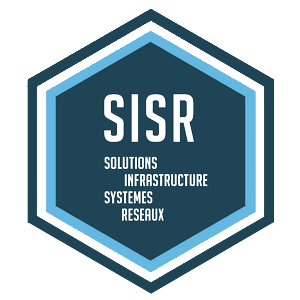

Le BTS SIO option SLAM (Solutions Logicielles et Applications Métiers) vous prépare à la mise en place de solutions informatiques au sein des entreprises, en vue de gérer efficacement un parc informatique complet.
Le BTS option SISR permet d'acquérir des compétences dans 3 domaines d'activités : En support et mise à disposition de services informatiques : l'étudiant se forme pour répondre aux attentes des utilisateurs en assurant la disponibilité des services informatiques existants.

| MESSI | CR7 |
| 8 ballons d'or | 5 ballons d'or |
| SLAM | |
| SISR |  |